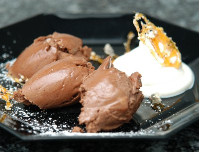

| Zutaten für 8 Portionen (ca. 1 Liter): | |
| 200 g | dunkle Schokolade |
| 4 | frische Eier |
| 4 El | Zucker |
| 3 El | Williams |
| 4 dl | Rahm |
| 1 Prise | Salz |
| 1 El | Puderzucker |
Zubereitung: 35 Minuten
Kühl stellen: 3 Stunden
Schokolade in Stücke brechen und in eine Schüssel geben.
Siedendes Wasser über die Schokoladenstücke geben bis die Schokolade vollständig bedeckt ist. Ca. 2 Minuten stehen lassen, dabei nie rühren. Dann das Wasser bis auf 1 Esslöffel sorgfältig abgiessen und sofort die geschmolzene Schokolade glatt rühren.
Die 4 Eier trennen. Die Eigelb mit den 4 El Zucker und 3 El Williams rühren bis die Masse heller wird und der Zucker vollständig aufgelöst ist. Langsam die geschmolzene Schokolade zugeben und alles gut verrühren. Die Mischung auf Zimmertemperatur abkühlen lassen.
Den Rahm steif schlagen. Die Hälfte mit dem Schwingbesen unter die Masse rühren, den Rest mit dem Gummischaber sorgfältig unter die Schokoladenmasse ziehen.
Die Eiweisse mit der Prise Salz zusammen steif schlagen. Dann einen Esslöffel Puderzucker zugeben und weiter schlagen bis der Eischnee glänzt. Den Eischnee portionenweise mit dem Gummischaber sorgfältig unter die Schokoladenmasse ziehen.
Zugedeckt ca. 3 Stunden kühl stellen.
Betty Bossi Mousse au chocolat, abgewandelt von Sandra. Auf der Betty Bossi Webseite gefunden. Scheinbar kommt das Rezept aus dem Kochbuch "Das grosse Betty Bossi Kochbuch" von 2006.
Resten von Desserts mit rohen Eiern nicht aufbewahren.
Zum Servieren mit dem Glaceportionierer Kugeln formen oder mit 2 Löffeln Mousse zu ovalen Rollen formen, dabei den Portionierer bzw. die Löffel immer wieder in heisses Wasser tauchen. Mousse auf Tellern anrichten.
Sehr sehr fein. RE 29.12.2010
@LINKBACK_TAG@ @WAKELOCK@